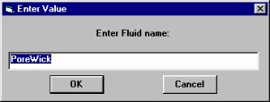
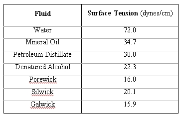
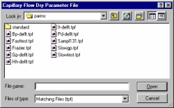

Shows the name of file that will be used to store the data gathered during the test. Click on this line and the screen shown at right appears. You may select a file to overwrite from the list or type the name of a new file in the box at the upper-right of the screen. You may also create a new folder from this screen for your new file.
Identification and Information
These lines are labeled according to their suggested uses but may contain any information desired. Information entered here is printed on the reports of the tests.

Name of the fluid used to wet the sample. Click on the status line and the box above will appear. Enter the name of the fluid you would like to use to wet the sample.
Surface tension of the wetting fluid. See the table.
The CAPWIN Software System uses these values for calculations.
Name of the parameter file that will control the dry phase of the test. To change the file, double click on this line. A screen similar to the one at right appears. Select an existing parameter file from the file list. To create a new parameter file, click the Edit Parameter File button. Go to the section on Editing Auto Parameters.

Name of the parameter file that will control the wet phase of the test. To change the file, double click on this line. A screen similar to the one for the Dry Curve Parameters File appears. Select an existing parameter file from the file list.
To create a new parameter file, click the Edit Parameter File button. Go to Editing Auto Parameters for details.
Type of test to be run. Double-click on this line to display the screen at right.
Select the type of test from the yellow list.
If applicable for the chosen test, a green list of options appears. Select the desired option.
Click OK.
Changes Type of Test to that selected and returns to the Autotest screen.Returns to the Autotest screen without changing the Type of Test.
Test used to find mean flow, bubble point, cumulative flow, and pore distribution.
The actual gas flow cannot be measured directly by flow rate because the pores of the sample are so small. The volume of the system and the rate of the increase in pressure are plugged into the ideal gas law to find flow rate.
Gas is used to find the Darcy's Permeability Constant.
These first three tests have two common options, Use Pressure Step List and Run Test as Pass/Fail. The Step List option allows the user to select a saved set of pressure values at which data values will be recorded when a test is run. The pass/fail option allows the user to select a minimum and maximum bubble point pore size which will determine if the test has passed or failed.
Used to find flow rates through a saturated sample.
Finds the surface area of pores that are large enough to permit flow through.
A diffusion test to determine the leak-down rate of a material.
Used for very low permeability samples. Finds flow rates corresponding to specific pressures applied and charts the rates over time.
Liquid is used to find the Darcy's Permeability Constant.
Finds pressure at which fluid can be forced through the pores of a hydrophobic sample.
The diameter of the tested sample. This is determined by the diameter of the O-rings holding the sample in the sample chamber. Click on the line labeled diameter to change this value.
The length of a cylindrical sample. For flat samples, use zero. Click on the line labeled cylinder length to change this value.
The thickness of a flat sample or the wall thickness of a cylindrical sample. Click on the line labeled thickness to change this value. Cancels the automated test setup and returns to the CAPWIN Main Screen.
| Back | Next |